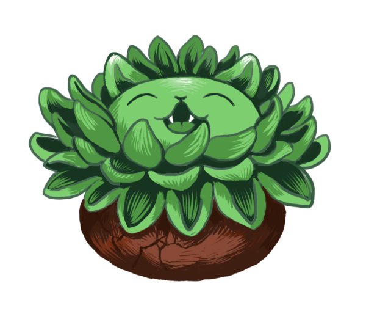

Welcome
We have a new game under development called Potted Cats. In it you can grow and care for your own small garden of cats! Visit your garden to see, if your green kitties need watering, food and petting. Over time they will reach full maturity, and you can find them a caring home.
Gameplay
Potted Cats is an idle manager mobile game in which the player can manage a small garden of plantlike cats. The player can purchase bags of seeds, plant them on garden pots and grow a variety of cats over time. In between the playing sessions the cats grow to the next phase and have a variety of new needs After the cats have fully matured, the player can sell them for profit and buy more expensive cat seeds for the next batch.
Features
Things you can do in the game:
- Plant seeds in gardening pots.
- Water the cats regularly to let them grow.
- Give the cats some food to make them stronger.
- Make the cats happy by petting them.
- Visit the cats regularly to see if they have all they need.
- Find the full grown cats a home to free space in your garden.
- Purchase more seeds.
Characters
| Cat plant | Personality | Growing time |
|---|---|---|
| Catcus | Hugger | 3 days |
| Kitmas star | Giver | 24 days |
| Pawppy | Sleeper | 7 nights |
Extras
Motivational video
Motivational audio
Audio clip provided by Cat Stevens at Soundbible.
Drag and drop fan art
You can drag the fan art back and forth between the two boxes! (Though I don't know why...)
|
|
|---|